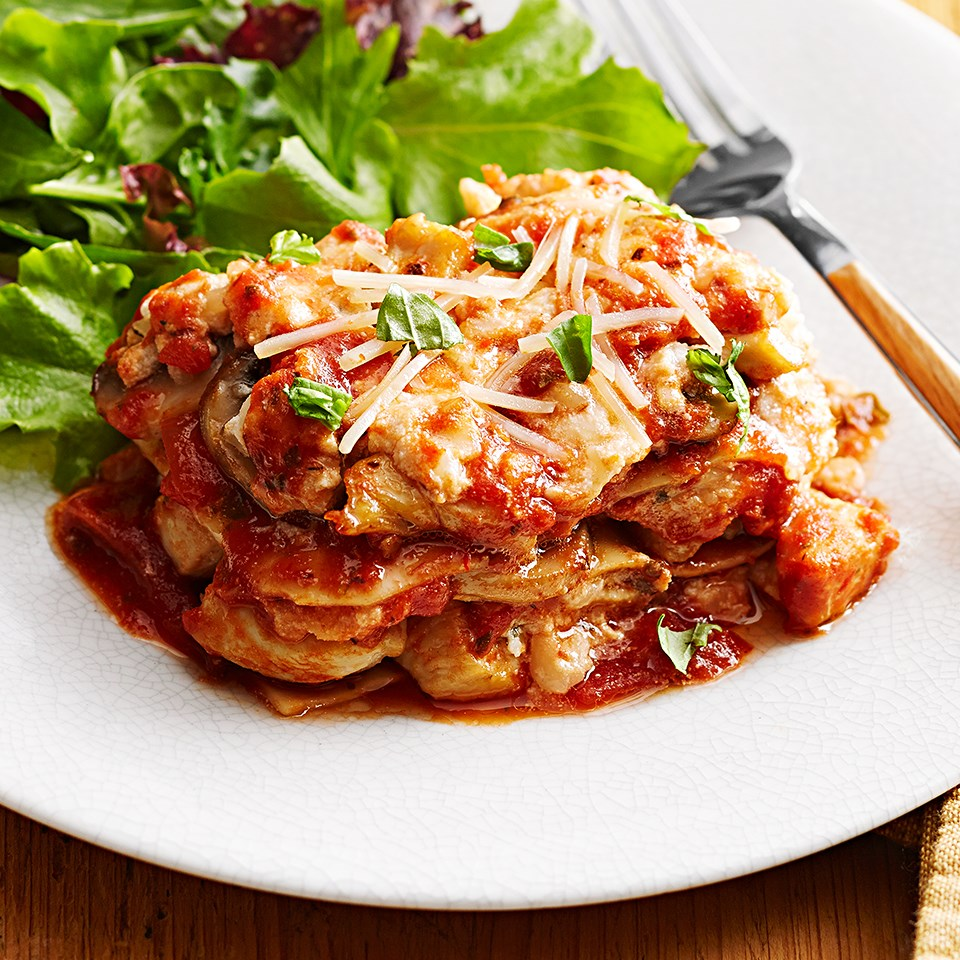

Lasagna

Description
Chicken Lasagna is a rich dish made of alternate layers of sauce, spinach, cheese, and chicken.
Ingredients
For chicken filling
- 300 grams Boneless chicken
- 1 tablespoon Black pepper powder
- 1-1/2 teaspoon Paprika powder
- 1 Lemon juice
- Salt, to taste
For the lasagna
- 10 Lasagna sheets
- 1 cup Mozzarella cheese
- shredded Parmesan cheese
- 1 cup Tomato Basil Pasta Sauce
- 1/2 cup Parsley leaves, chopped
Steps
- To begin making the Chicken Lasagna recipe, wash and clean chicken well. Add pepper powder, lime juice, salt and paprika powder, mix well in a mixing bowl.
- Cover and let the chicken marinate for about 1 to 2 hours.
- Later add olive oil into a pan. And sauté the marinated chicken pieces on medium flame until cooked well. This will take about 15 minutes approximately.
- Preheat the oven to 170 degree centigrade. Grease a 9-by-13-inch baking dish with butter well. Place a layer of cooked lasagna sheet in one layer.
- Add some tomato pasta sauce, sprinkle cheese, layer chicken pieces on top, and sprinkle some more cheese on top of the chicken and some finely chopped parsley as well. Repeat the same step and keep layering until you reach the top of the pan.
- Bake the lasagna pasta in preheated oven for about 7 to 12 minutes or until cheese melts and top is slightly browned.
- Let the lasagna rest for about 10 minutes, then scatter the sliced parsley leaves on top, cut into squares and serve.